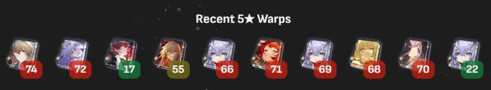

<main id="honkai-star-rail-page">
  <section [id]="'header-hsr'" class="header">
    
    <h1 class="outline-blue">HONKAI STAR RAIL</h1>
    <h2 class="outline-blue">V 3.4</h2>
  </section>

  <section [id]="'copy-uid'" class="copy-uid-section">
    <div class="copy-uid-container">
      <button class="transparent" (click)="onCopy()" [attr.aria-label]="'Copiar ' + value">
        <span>UID:</span>
        <span>{{ this.hsrUID }}</span>
        <span> @if(isCopied){ ✅ } @else { 📋 } </span>
      </button>
    </div>
  </section>

  <section [id]="'latest-videos'" class="latest-videos fade-in-left">
    <div class="section-title">
      <h2>Últimos Videos</h2>
    </div>

    <div class="section-content">
      <div class="video-card" *ngFor="let video of youtubeVideos" (click)="goToVideo(video.videoId)">
        
        <h3>{{ video.title }}</h3>
      </div>
    </div>
  </section>

  <section [id]="'latest-pulls'" class="latest-pulls-section fade-in-right">
    <div class="section-title">
      <h2>Historial de Tiradas</h2>
    </div>
    <div class="section-content">
      
    </div>
  </section>

  <section [id]="'warps-per-patch'" class="warps-per-patch-section fade-in-left">
    <div class="section-title">
      <h2>Tiradas por Version</h2>
    </div>
    <div class="section-content">
      <iframe id="hsr-warps-per-patch" title="HSR Warps Per Patch" frameborder="0" src="https://docs.google.com/spreadsheets/d/e/2PACX-1vRIWjzFwAZZoBvKw2oiNaVpppI9atoV0wxuOjulKRJECrg_BN404d7LoKlHp8RMX8hegDr4b8jlHjYy/pubhtml"> </iframe>
    </div>
  </section>
</main>
